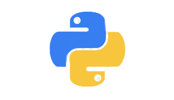

Языки программирования
На сегодняшний день существует 253 популярных языков програмирования. Но пожалуй я выделю самые популярные из них.
Первый язык будет C#. На нем пишут как программы так и игры. У этого языка есть брат тоесть C++ и C. Также используется в back-end сайтов.
2. Вторым языком будет JavaScript. С помощью этого языка зачастую делают сайты, тоесть с помощью HTML и CSS. Так называемый Front-end разработка.
P.S. Даже этот сайт сделан с помощью этих языков программирования.
3. Третий язык будет Python. Он похож на C#, т.к. на нём можно писать тоже back-end и разные приложения.

4. Java — строго типизированный объектно-ориентированный язык программирования общего назначения.
Java представляет собой объектно-ориентированный язык программирования, а JavaScript - это объектно-ориентированный язык создания сценариев. Java используется для создания приложений, которые запускаются на виртуальных машинах или в браузерах, а код JavaScript выполняется только в браузере.
Все эти 4 языка очень хорошо используют сейчас. В заключении хочу сказать, если вы выбераете язык, то выберайте то что вам нравится и больше по душе ведь от этого зависит ваша карьера.